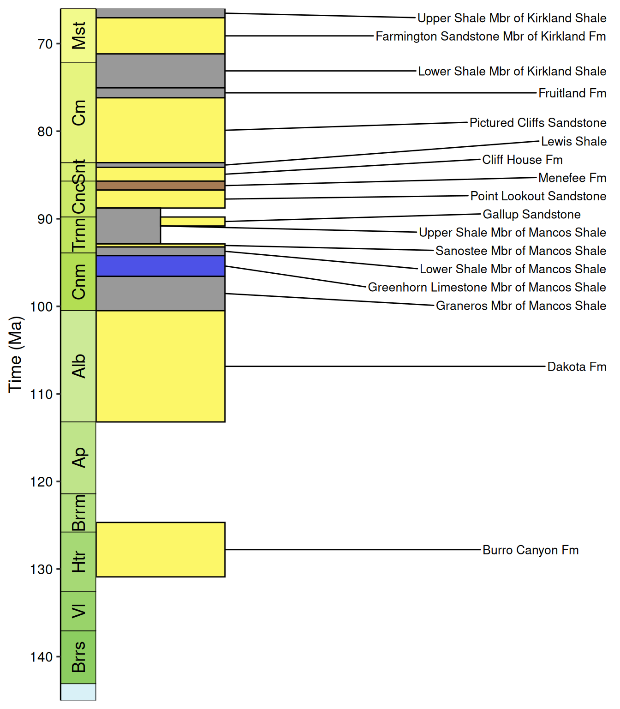
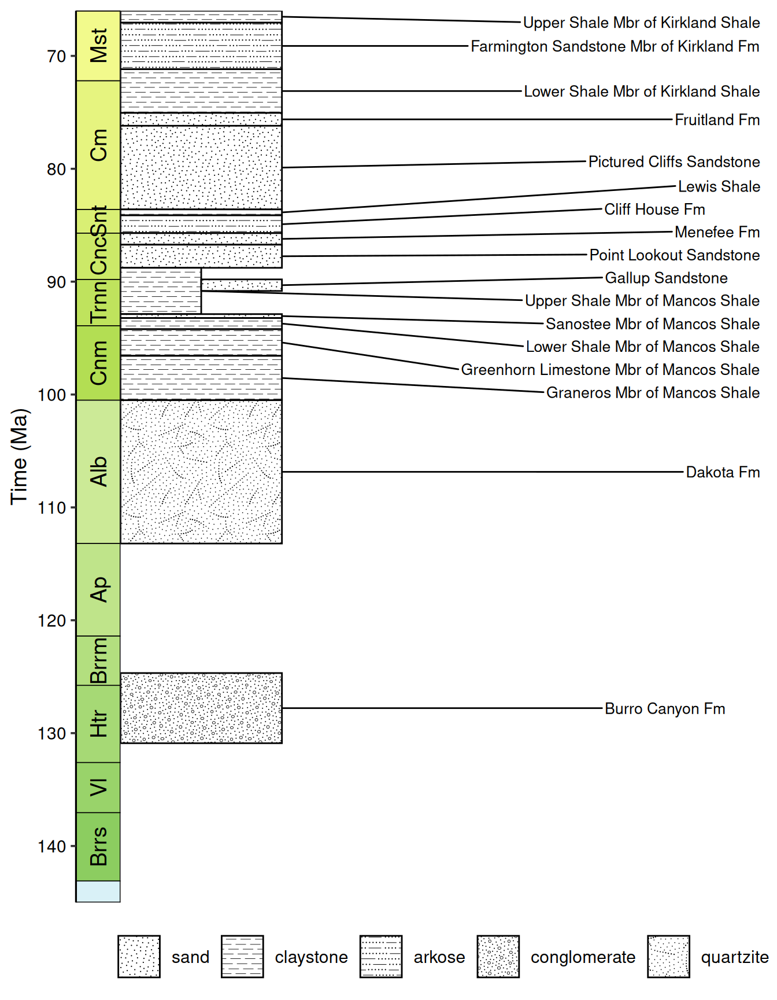
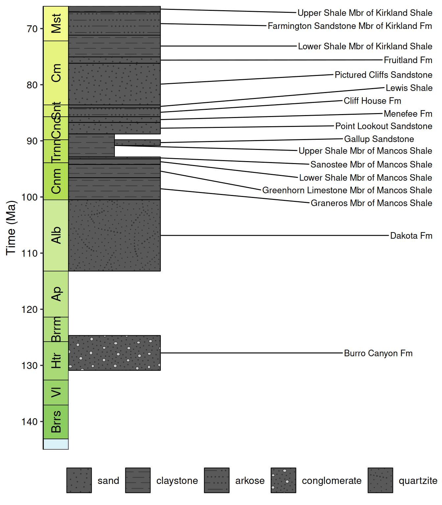
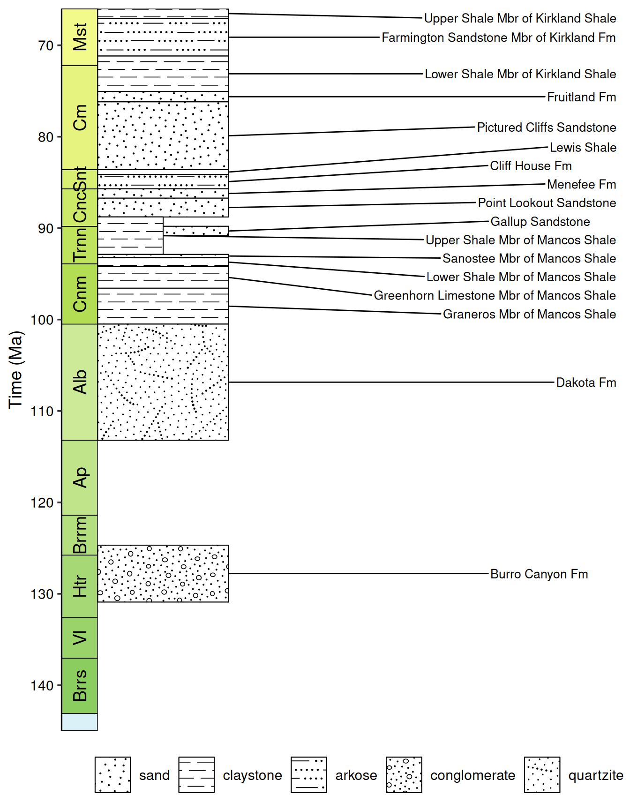

In 2006, the U.S. Geological Survey and the Geologic Data Subcommittee of the Federal Geographic Data Committee established the Digital Cartographic Standard for Geologic Map Symbolization. This is the National Standard for the digital cartographic representation of geologic map features, including line symbols, point symbols, colors, and patterns. The standard patterns that are put forth in this document are included in deeptime (thanks to the work that Daven Quinn put in to extracting them as SVGs). Let’s explore the functionality that deeptime has to retrieve and utilize these patterns.
Let’s first load the packages we’ll need:
# Load deeptime
library(deeptime)
## Error in get(paste0(generic, ".", class), envir = get_method_env()) :
## object 'type_sum.accel' not found
# Load rmacrostrat to get data
library(rmacrostrat)
# Load packages for data visualization
library(ggplot2)
library(ggrepel)Stratigraphic columns
The rmacrostrat package allows users to access the Macrostrat API, which includes various geological data (e.g., lithostratigraphic units) and definitions/metadata associated with those data. The package includes a number of vignettes that walk through how to retrieve and visualize various types of data from the database. Here, we’re going to be plotting a stratigraphic column for the San Juan Basin, a large structural depression which spans parts of New Mexico, Colorado, Utah, and Arizona. The details about downloading this data are thoroughly presented in this rmacrostrat vignette. For the purposes of this deeptime vignette, we’ll skip ahead and download the unit-level stratigraphic data for this basin during the Cretaceous:
# Using the column ID, retrieve the units in the San Juan Basin column
san_juan_units <- get_units(column_id = 489, interval_name = "Cretaceous")
# See the column names and number of rows
colnames(san_juan_units)
## [1] "unit_id" "section_id" "col_id" "project_id"
## [5] "col_area" "unit_name" "strat_name_id" "Mbr"
## [9] "Fm" "Gp" "SGp" "t_age"
## [13] "b_age" "max_thick" "min_thick" "outcrop"
## [17] "pbdb_collections" "pbdb_occurrences" "lith" "environ"
## [21] "econ" "measure" "notes" "color"
## [25] "text_color" "t_int_id" "t_int_name" "t_int_age"
## [29] "t_prop" "units_above" "b_int_id" "b_int_name"
## [33] "b_int_age" "b_prop" "units_below" "strat_name_long"
## [37] "refs" "clat" "clng" "t_plat"
## [41] "t_plng" "b_plat" "b_plng"
nrow(san_juan_units)
## [1] 17Plot stratigraphic column
We now have information for each of the 17 Cretaceous geologic units contained within the San Juan Basin, including the age of the top and bottom of each, which is what we will use to plot our stratigraphic column. We’ll follow the rmacrostrat vignette to plot the stratigraphic column:
# Specify x_min and x_max in dataframe
san_juan_units$x_min <- 0
san_juan_units$x_max <- 1
# Tweak values for overlapping units
san_juan_units$x_max[10] <- 0.5
san_juan_units$x_min[11] <- 0.5
# Add midpoint age for plotting
san_juan_units$m_age <- (san_juan_units$b_age + san_juan_units$t_age) / 2
ggplot(san_juan_units, aes(ymin = b_age, ymax = t_age,
xmin = x_min, xmax = x_max)) +
# Plot units, colored by rock type
geom_rect(fill = san_juan_units$color, color = "black") +
# Add text labels
geom_text_repel(aes(x = x_max, y = m_age, label = unit_name),
size = 3.5, hjust = 0, force = 2,
min.segment.length = 0, direction = "y",
nudge_x = rep_len(x = c(2, 3), length.out = 17)) +
# Reverse direction of y-axis
scale_y_reverse(limits = c(145, 66), n.breaks = 10, name = "Time (Ma)") +
# Theming
theme_classic() +
theme(legend.position = "none",
axis.line.x = element_blank(),
axis.title.x = element_blank(),
axis.text.x = element_blank(),
axis.ticks.x = element_blank()) +
# Add geological time scale
coord_geo(pos = "left", dat = list("stages"), rot = 90)
Use stratigraphic patterns
Isn’t that snazzy! You’ll see that we used the colors that come straight from Macrostrat (i.e., the “color” column) to visualize the different units. Presumably these colors represent something about the different lithologies of the units. However, we could also represent these lithologies with our standardized FGDC patterns. First, we’ll need to get the lithology definitions from Macrostrat, which includes the FGDC pattern codes:
# Get lithology definitions
liths <- def_lithologies()
head(liths)
## lith_id name type group class color fill
## 1 1 siliciclastic siliciclastic sedimentary #FFF400 670
## 2 2 gravel siliciclastic unconsolidated sedimentary #FFAB00 601
## 3 3 sand siliciclastic unconsolidated sedimentary #FFCA00 607
## 4 4 silt siliciclastic unconsolidated sedimentary #919AA3 619
## 5 5 mud siliciclastic unconsolidated sedimentary #A7ACB0 641
## 6 6 claystone siliciclastic mudrocks sedimentary #B2B5B7 620
## t_units
## 1 346
## 2 1215
## 3 12349
## 4 9356
## 5 8442
## 6 5101In this output, the “fill” column corresponds to the FGDC pattern code for each lithology. Now, we need to figure out the lithology of each of our San Juan units. However, you’ll notice that some units have multiple lithologies:
# Count lithologies for each unit
sapply(san_juan_units$lith, nrow)
## [1] 1 1 1 2 1 1 1 3 3 1 1 1 1 1 1 6 3
# Inspect one with multiple rows
san_juan_units$lith[16]
## [[1]]
## atts name prop lith_id type class
## 1 shale 0.0714 8 siliciclastic sedimentary
## 2 quartzite 0.3571 85 metasedimentary metamorphic
## 3 sandstone 0.3571 10 siliciclastic sedimentary
## 4 red claystone 0.0714 6 siliciclastic sedimentary
## 5 calcareous clay 0.0714 93 siliciclastic sedimentary
## 6 calcareous clay 0.0714 93 siliciclastic sedimentaryThat’s a lot of different lithologies for this single unit! We could theoretically represent all of the lithologies, but let’s just go ahead and extract the primary lithology, or the one with the highest “prop” value (i.e., proportion of unit):
# Get the primary lithology for each unit
san_juan_units$lith_prim <- sapply(san_juan_units$lith, function(df) {
df$name[which.max(df$prop)]
})
table(san_juan_units$lith_prim)
##
## conglomerate graywacke litharenite quartzite sandstone shale
## 1 1 1 1 6 7Now that we’ve assigned a primary lithology to each unit, we can assign an FGDC pattern code to each unit:
# Assign pattern code
san_juan_units$pattern <- factor(liths$fill[match(san_juan_units$lith_prim, liths$name)])
table(san_juan_units$pattern, exclude = NULL)
##
## 602 607 620 654 702
## 1 6 7 2 1Excellent, we now have a pattern code for each unit! Now we can go
ahead and use these instead of the colors for the fills of the units. In
order to convert the codes to visual patterns, we’ll need to move the
fill argument to a call to aes() and we’ll
need to add a call to scale_fill_geopattern():
# Plot with pattern fills
ggplot(san_juan_units, aes(ymin = b_age, ymax = t_age,
xmin = x_min, xmax = x_max)) +
# Plot units, patterned by rock type
geom_rect(aes(fill = pattern), color = "black") +
scale_fill_geopattern() +
# Add text labels
geom_text_repel(aes(x = x_max, y = m_age, label = unit_name),
size = 3.5, hjust = 0, force = 2,
min.segment.length = 0, direction = "y",
nudge_x = rep_len(x = c(2, 3), length.out = 17)) +
# Reverse direction of y-axis
scale_y_reverse(limits = c(145, 66), n.breaks = 10, name = "Time (Ma)") +
# Theming
theme_classic() +
theme(legend.position = "none",
axis.line.x = element_blank(),
axis.title.x = element_blank(),
axis.text.x = element_blank(),
axis.ticks.x = element_blank()) +
# Add geological time scale
coord_geo(pos = "left", dat = list("stages"), rot = 90)
Further customization
If you use scale_fill_geopattern(), the patterns are
used with the default parameters (e.g., line color, background color,
and scale). However, if you’d like to customize how the patterns look,
you can use the geom_ functions from the ggpattern
package (e.g., geom_rect_pattern()) and use the “geo”
pattern. Once you have implemented this, any of the
following ggplot2 aesthetics can be used to tweak the patterns. Note
that the defaults for these two methods are often different:
| aesthetic | description |
scale_fill_geopattern() default |
ggpattern default |
|---|---|---|---|
| pattern_type | Code for the FGDC pattern to use | “101” | “101” |
| pattern_color | Color used for strokes and points | original color | “grey20” |
| pattern_fill | Color used to fill various closed shapes (e.g., circles) in the pattern | original color | “grey80” |
| pattern_alpha | Alpha transparency for pattern | 1 | 1 |
| pattern_scale | Scale of the pattern (higher values zoom in on pattern) | 2 | 1 |
| fill | Background color | “white” | “white” |
For the pattern code (i.e., pattern\_type), see the
“pattern numbers” in the full
pattern chart for the full list of options. Daven Quinn has also
assembled more accessible documentation of the map
patterns/codes and lithology
patterns/codes. def_lithologies() can also be used to
look up pattern codes for various lithologies (see the “fill” column).
Note that codes associated with color variants (e.g., “101-M”) are
supported but will result in the default color variant instead (usually
black and white). Most, if not all, color variants can be recreated by
adjusting the color, fill, and background of the pattern.
Let’s try increasing the scale of the patterns in our stratigraphic
column. We’ll need to switch to using geom_rect_pattern().
Since we are specifying the patterns within an aes() call,
we can use scale_pattern_type_identity() to use those raw
pattern codes:
# Plot using ggpattern
library(ggpattern)
ggplot(san_juan_units, aes(ymin = b_age, ymax = t_age,
xmin = x_min, xmax = x_max)) +
# Plot units, patterned by rock type
geom_rect_pattern(aes(pattern_type = pattern), pattern = "geo",
pattern_scale = 4) +
scale_pattern_type_identity() +
# Add text labels
geom_text_repel(aes(x = x_max, y = m_age, label = unit_name),
size = 3.5, hjust = 0, force = 2,
min.segment.length = 0, direction = "y",
nudge_x = rep_len(x = c(2, 3), length.out = 17)) +
# Reverse direction of y-axis
scale_y_reverse(limits = c(145, 66), n.breaks = 10, name = "Time (Ma)") +
# Theming
theme_classic() +
theme(legend.position = "none",
axis.line.x = element_blank(),
axis.title.x = element_blank(),
axis.text.x = element_blank(),
axis.ticks.x = element_blank()) +
# Add geological time scale
coord_geo(pos = "left", dat = list("stages"), rot = 90)
Oh no! This is a good example of how the defaults change between the two methods. We can easily fix this by specifying our own defaults:
ggplot(san_juan_units, aes(ymin = b_age, ymax = t_age,
xmin = x_min, xmax = x_max)) +
# Plot units, patterned by rock type
geom_rect_pattern(aes(pattern_type = pattern), pattern = "geo",
pattern_color = "black", pattern_fill = "white",
fill = "white", pattern_scale = 4) +
scale_pattern_type_identity() +
# Add text labels
geom_text_repel(aes(x = x_max, y = m_age, label = unit_name),
size = 3.5, hjust = 0, force = 2,
min.segment.length = 0, direction = "y",
nudge_x = rep_len(x = c(2, 3), length.out = 17)) +
# Reverse direction of y-axis
scale_y_reverse(limits = c(145, 66), n.breaks = 10, name = "Time (Ma)") +
# Theming
theme_classic() +
theme(legend.position = "none",
axis.line.x = element_blank(),
axis.title.x = element_blank(),
axis.text.x = element_blank(),
axis.ticks.x = element_blank()) +
# Add geological time scale
coord_geo(pos = "left", dat = list("stages"), rot = 90)
There we go, now the patterns are more zoomed in! Hmm…now it looks a
little boring. Let’s go ahead and bring back those colors from before.
We’ll make both the background color (fill) and the pattern
fill color (pattern_fill) based on the “color” column:
ggplot(san_juan_units, aes(ymin = b_age, ymax = t_age,
xmin = x_min, xmax = x_max)) +
# Plot units, patterned by rock type
geom_rect_pattern(aes(pattern_type = pattern, fill = color,
pattern_fill = color), pattern = "geo",
pattern_color = "black", pattern_scale = 4) +
scale_pattern_type_identity() +
# Use the raw color values
scale_fill_identity() +
scale_pattern_fill_identity() +
# Add text labels
geom_text_repel(aes(x = x_max, y = m_age, label = unit_name),
size = 3.5, hjust = 0, force = 2,
min.segment.length = 0, direction = "y",
nudge_x = rep_len(x = c(2, 3), length.out = 17)) +
# Reverse direction of y-axis
scale_y_reverse(limits = c(145, 66), n.breaks = 10, name = "Time (Ma)") +
# Theming
theme_classic() +
theme(legend.position = "none",
axis.line.x = element_blank(),
axis.title.x = element_blank(),
axis.text.x = element_blank(),
axis.ticks.x = element_blank()) +
# Add geological time scale
coord_geo(pos = "left", dat = list("stages"), rot = 90)Well isn’t that a nice looking visualization of the stratigraphic column!